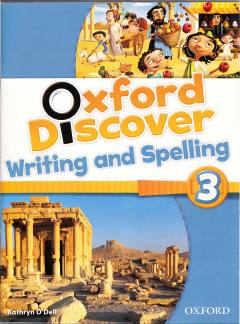

ODIngliz tilida yozish va imlo qoidalarini o'rganish uchun amaliy qo'llanma.
Ushbu qo'llanma ingliz tilini o'rganuvchilar uchun yozish va imlo ko'nikmalarini rivojlantirishga qaratilgan bo'lib, qiziqarli matnlar va mashqlarni o'z ichiga oladi. Kitob turli mavzulardagi hikoyalar, qoidalar va amaliy topshiriqlar orqali o'quvchining lug'at boyligi hamda savodxonligini oshiradi. Nashr boshlang'ich va o'rta bosqichdagi o'quvchilar uchun mo'ljallangan.